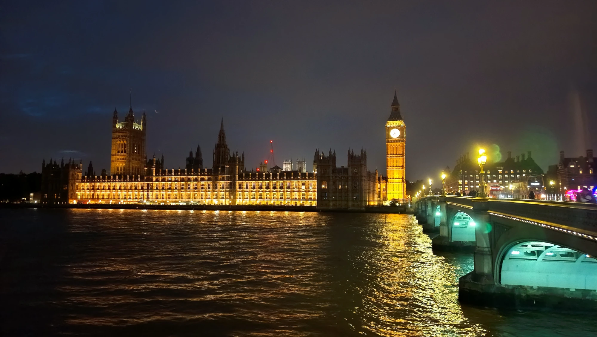
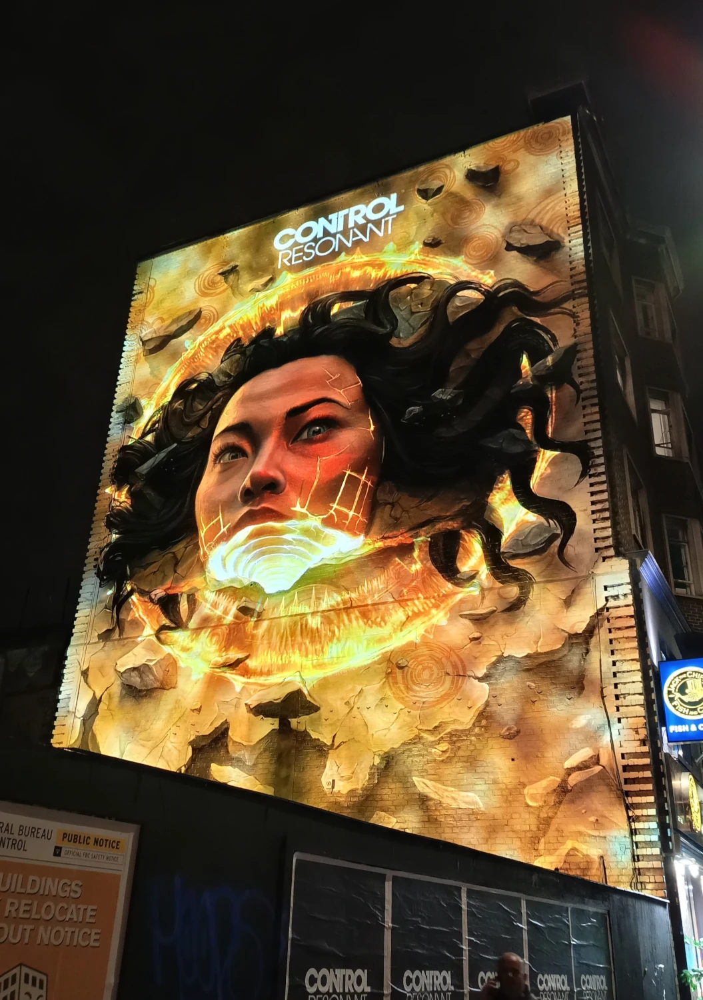
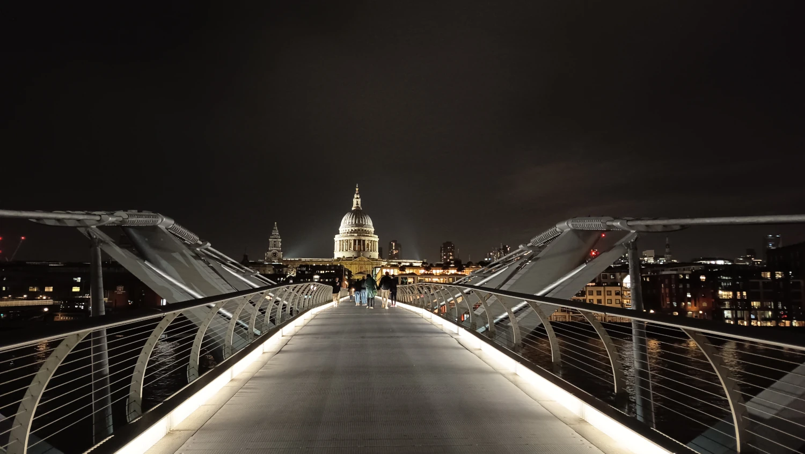
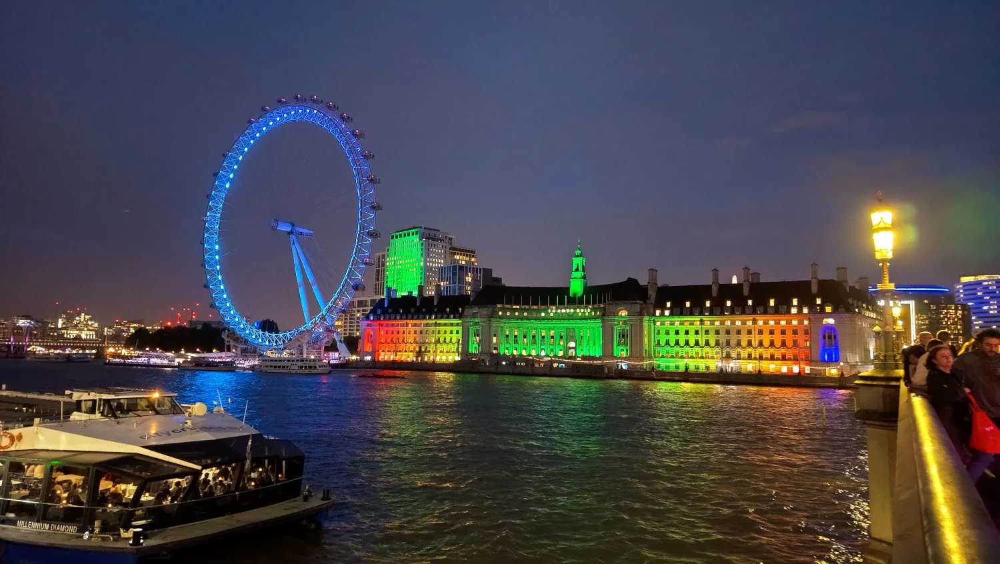
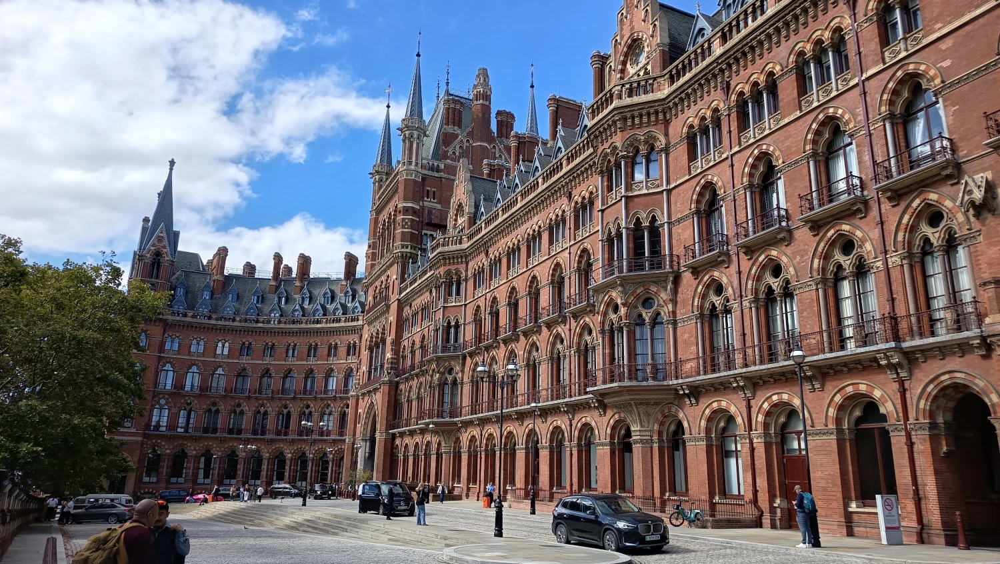
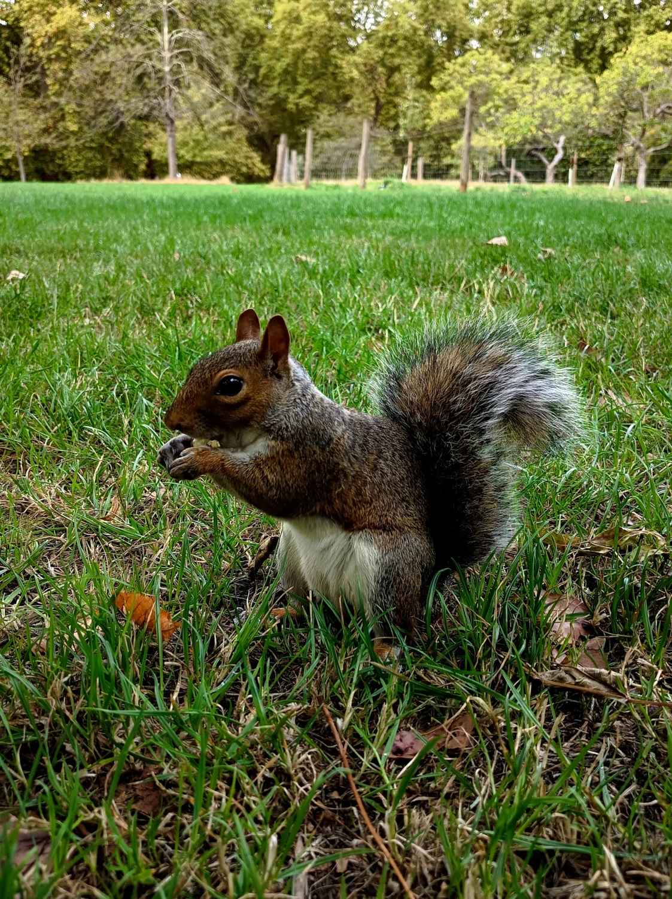

Od královských paláců po temné uličky
Londýn

Londýn již počtvrté? A proč ne! Tentokrát jsem tam vyrazila se svou kamarádkou a kolegyní, která v Londýně ještě nikdy nebyla, ačkoliv se v metru orientovala líp než já. :-D
Cesta z letistě Stanstad nás stála 75 liber tam i zpět pro obě na přepážce. A celodenní jízdenka metrem jen 16.60 liber.
Bydlely jsme přímo na Brick Lane, ulici, o které bych řekla, že má hodně výraznou muslimskou a bangladéšskou atmosféru. Náš pokoj se nacházel v třípatrovém domě se dvěma koupelnami a jednou společnou kuchyní. Pokoj jsme měly hned vedle jedné z koupelen, která byla sdílená s několika dalšími pokoji, a to byl občas opravdu zážitek. Někdy jsme čekaly, než se vůbec dostaneme dovnitř, i déle než půl hodiny.
A hygiena některých spolubydlících tomu zrovna nepomáhala. Jednou po sobě někdo nechal na záchodě takovou „památku“, že tam vydržela až do druhého dne, protože jednoduše nešla spláchnout. :-D
Úplný vrchol ale přišel poslední noc před odjezdem. Od půlnoci asi do dvou hodin ráno se nám někdo neustále dobýval do pokoje. Dorazila skupinka nových asijských spolubydlících a dělala tak neskutečný bordel, že jsem tam nakonec musela dvakrát vlítnout, což vůbec nepomohlo. Takže místo klidného spánku před cestou domů jsme měly noční program zdarma. Ráno jsme pak obě vypadaly jako zombíci a mohly vyrazit na letiště. :-D
Prošly jsme už známá místa v centru od Tower Bridge až po Westminster, ale zavítaly jsme také do Hyde Parku, Notting Hillu, Greenwiche nebo moderního Canary Wharf. Nechyběla ani známá filmová místa spojená s Harrym Potterem.
Pro mě byl tentokrát zbrusu novým zážitkem noční Londýn. Odhodila jsem strach a vyrazily jsme do ulic po setmění – a rovnou v pátek. Všude to žilo, ulice byly plné lidí a po Temži se proháněly policejní čluny. Mně se navíc u Westminster Bridge přihodila jedna menší nechtěná příhoda. Odchytila si mě jakási postavička převlečená za Mickey Mouse a chtěla se se mnou fotit. Nejdřív na mě zkoušela 10 liber, nakonec jsem to usmlouvala na pět. Ze sevření se ale prakticky nedalo vymanit, natož zdrhnout. Bohužel. :-D Takže mám alespoň předraženou památku na Mickeyho z Londýna.
U Buckinghamského paláce jsme sice žádná princátka nepotkaly, zato jsme narazily na slavnost spojenou s ceremonií královské gardy. A počasí? Opět typicky „anglické“ – tedy překvapivě slunečné. Pršelo jen jednu noc, dopoledne ještě trochu mrholilo, ale jinak bylo po celou dobu příjemně teplo, slunečno a samozřejmě větrno.
Ani při čtvrté návštěvě tak Londýn nebyl úplně stejný. Některá místa už sice dobře znám, ale pokaždé se objeví něco nového – tentokrát noční ulice, královská ceremonie a jeden neodbytný Mickey Mouse. 😄
Galerie




